Ujaval Gandhi
Ujaval GandhiIzrada interaktivnih mapa otkrivanja (QGIS3)¶
Ovaj tutorijal pokazuje kako se koristi dinamička maska sloja u grupi slojeva zajedno sa izrazima za pravljenje interaktivne mape koja otkriva slojeve ispod trenutnog sloja dok pomerate kursor. To se radi korišćenjem novih režima mešanja maski u QGIS-u, zajedno sa tehnikom za dodavanje interaktivnosti prikazanom u prethodnom tutorijalu na Izrada interaktivnih mapa na platnu (QGIS3).
Ovaj tutorijal je inspirisan radom „Hamiša Kembela <https://www.linkedin.com/in/hncampbell/>”_ koji je podelio svoju interaktivnu vizuelizaciju na Linkedinu.
Pregled zadatka¶
Učitaćemo 2 sloja rasterskih pločica i koristiti masku sloja sa simbologijom generatora geometrije da bismo otkrili donji sloj dok se kursor kreće po platnu.

Procedura¶
Počećemo sa učitavanjem 2 rasterska sloja. Jedan sloj na vrhu i drugi na dnu koji će biti otkriven slojem maske. Dobićemo ih iz dodatka QuickMapServices. Potražite i instalirajte dodatak QuickMapServices iz zvaničnog repozitorijuma dodataka QGIS. Pogledajte Korišćenje dodataka (QGIS3) za uputstva o instaliranju dodataka. Nakon instalacije, moraćemo da dodamo neke dodatne usluge ovom dodatku. Idite na .
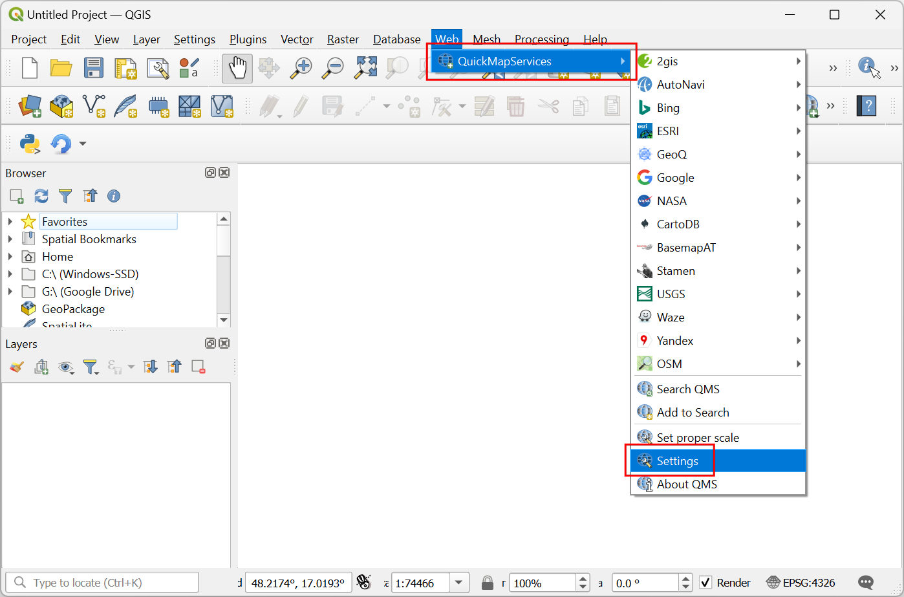
U dijalogu Podešavanja QuickMapServices, pređite na karticu Više usluga i kliknite na dugme Preuzmi doprinosni paket. Ovaj korak je neophodan da biste dobili pristup osnovnoj mapi Google Satellite.
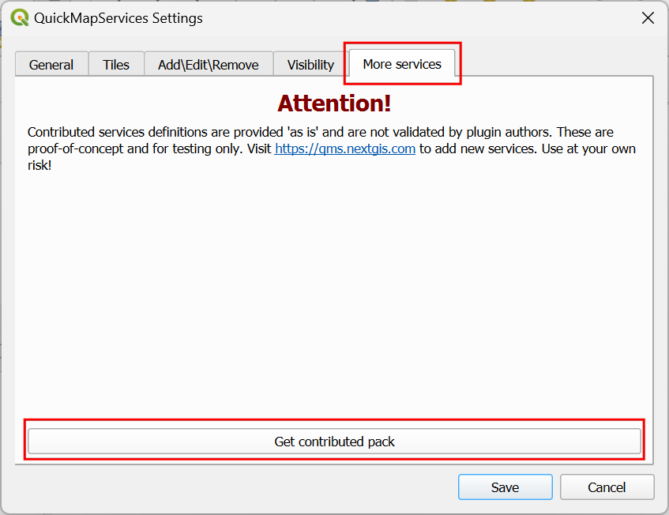
Sada smo spremni da dodamo slojeve. Najviši sloj na našoj mapi biće sloj OpenStreetMap. Idite na da biste ga dodali. Zumirajte i centrirajte mapu na bilo koju lokaciju po vašem izboru.
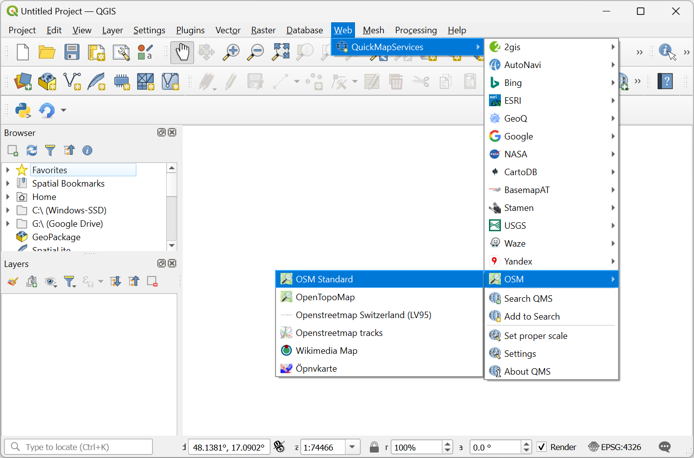
Zatim dodajte sloj Google Satellite iz . Ovo će biti donji sloj koji će biti otkriven pomoću maske.
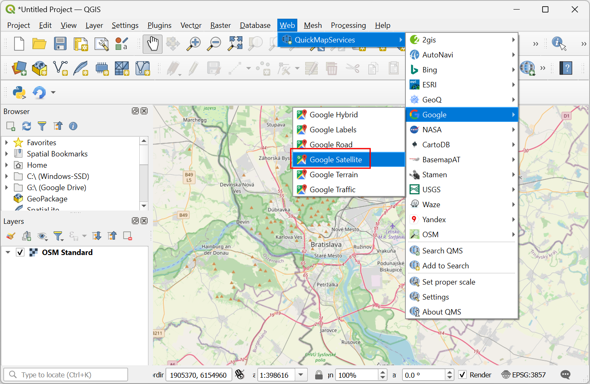
Napravićemo novi sloj koji će služiti kao maska. Idite na .

U dijalogu Novi sloj geopaketa, kliknite na dugme … za Baza podataka i pregledajte direktorijum na računaru. Sačuvajte sloj kao
mask.gpkg. Promenite Tip geometrije naPoligoni CRS naProjekat CRS: EPSG:3857 - WGS84 / Pseudo-Merkator. Prisustvo ovog sloja u projektovanom CRS-u je korisno jer nam omogućava da odredimo poluprečnik maske u metrima, a ne u stepenima. Kliknite na U redu.
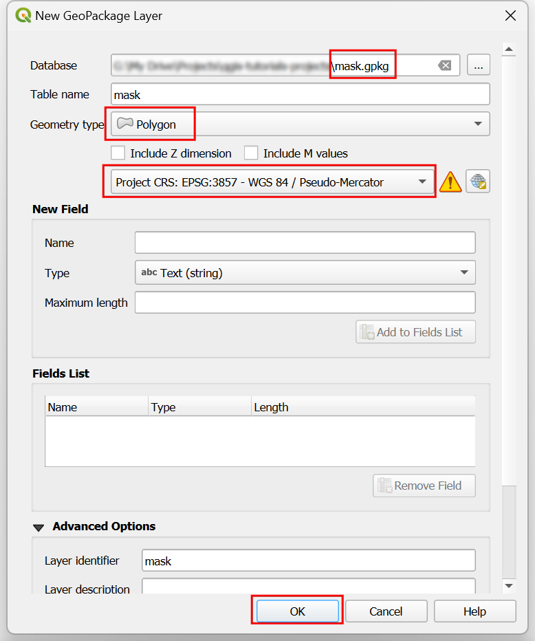
Novi sloj „maska“ će biti dodat na panel Slojevi. Kliknite na dugme Otvori panel za stilizovanje slojeva. Kliknite na Jedan simbol da biste videli dodatne opcije za renderere.
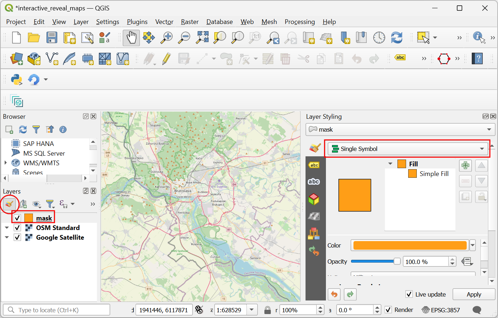
Izaberite „Invertovani poligoni“ kao renderer. Pomerite se nadole i kliknite na Jednostavno popunjavanje da biste videli dodatne tipove slojeva simbola.
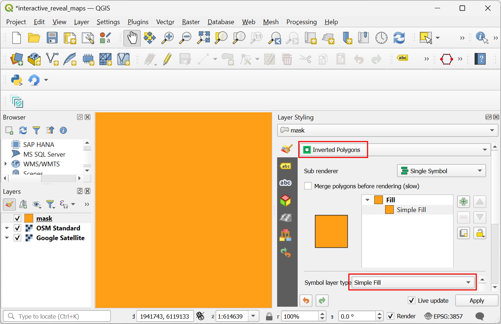
Белешка
Invertovani poligonski renderer se koristi za prikazivanje regiona izvan objekta. U našem slučaju, sloj „maske“ je prazan, tako da je invertovani region celo platno. Zato vidite celo platno renderovano korišćenjem izabrane simbologije. Koristimo ovaj renderer za tutorijal jer može da renderuje mapu bez potrebe da bilo koji objekat bude prisutan u sloju i radiće bilo gde u svetu.
Izaberite
Generator geometrijekao Tip sloja simbola. Sada ćemo uneti izraz da bismo promenili način prikazivanja sloja. Kliknite na dugme Izraz.
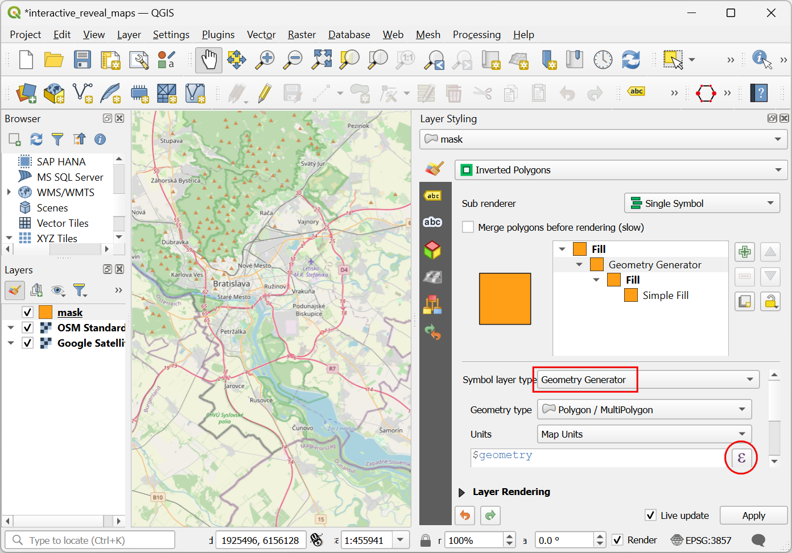
Unesite sledeći izraz u dijalog Kreator izraza. Ovaj izraz će kreirati poligon bafera sa radijusom od 5000 metara oko trenutne pozicije kursora. Kliknite na U redu.
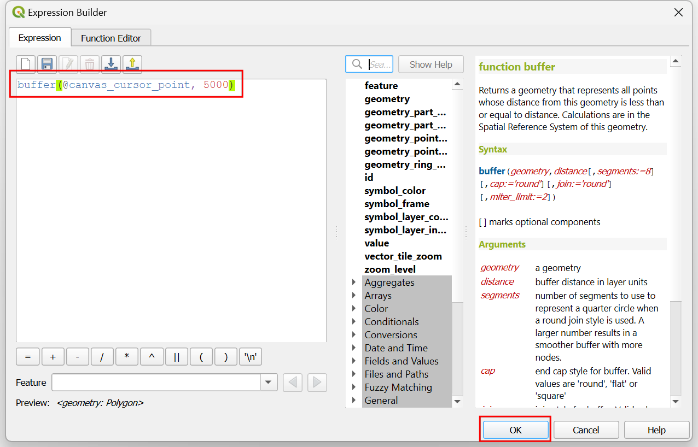buffer(@canvas_cursor_point, 5000)
Videćete kružni poligon gde god kliknete na platno. Podesite veličinu bafera ako je potrebno za vaš region i zatvorite Panel za stilizovanje slojeva. Da bismo koristili režime mešanja maske, moramo kreirati grupu slojeva. Držite taster Ctrl i izaberite slojeve
maskiOSM Standard. Kliknite desnim tasterom miša na izabrane slojeve i izaberite Grupiši izabrano.
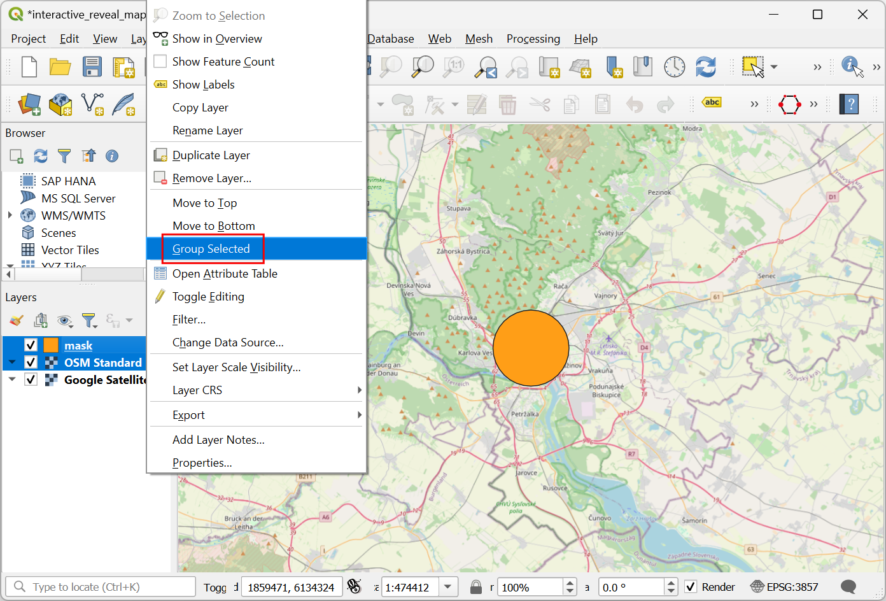
Biće kreirana nova grupa slojeva. Unesite naziv kao
mask_group. Kliknite na dugme Otvori panel za stilizovanje slojeva.
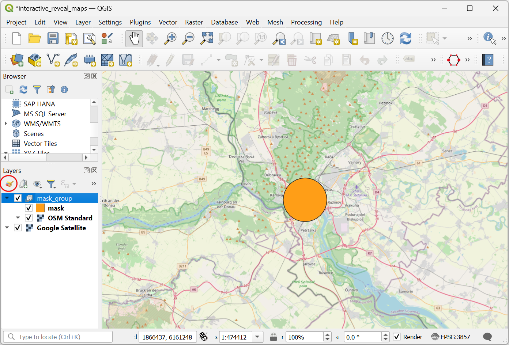
Označite dugme Render Layers as a Group. Ovaj korak omogućava režime mešanja maski za slojeve u ovoj grupi.
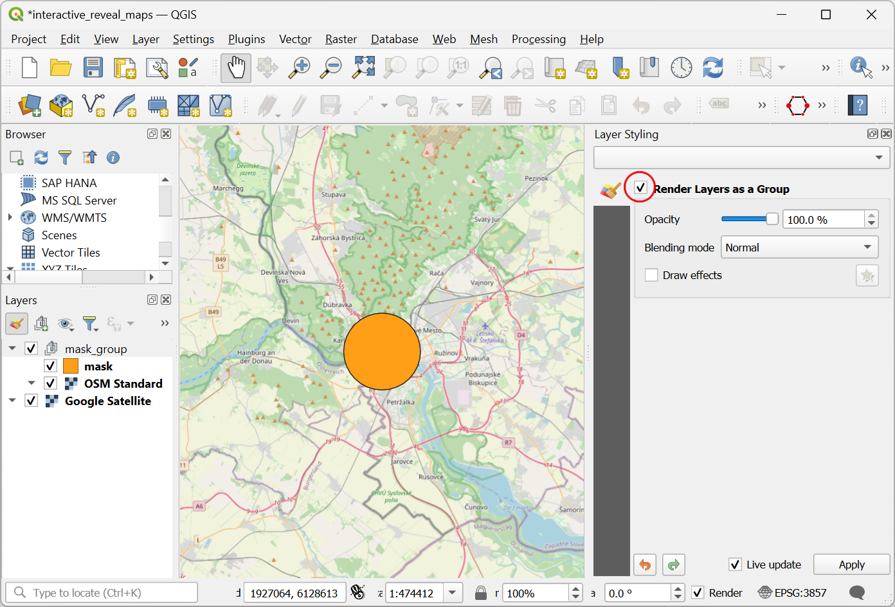
Izaberite sloj „maska“ iz „mask_group“. U panelu Stilizovanje sloja, pomerite se nadole i proširite odeljak Renderovanje sloja.
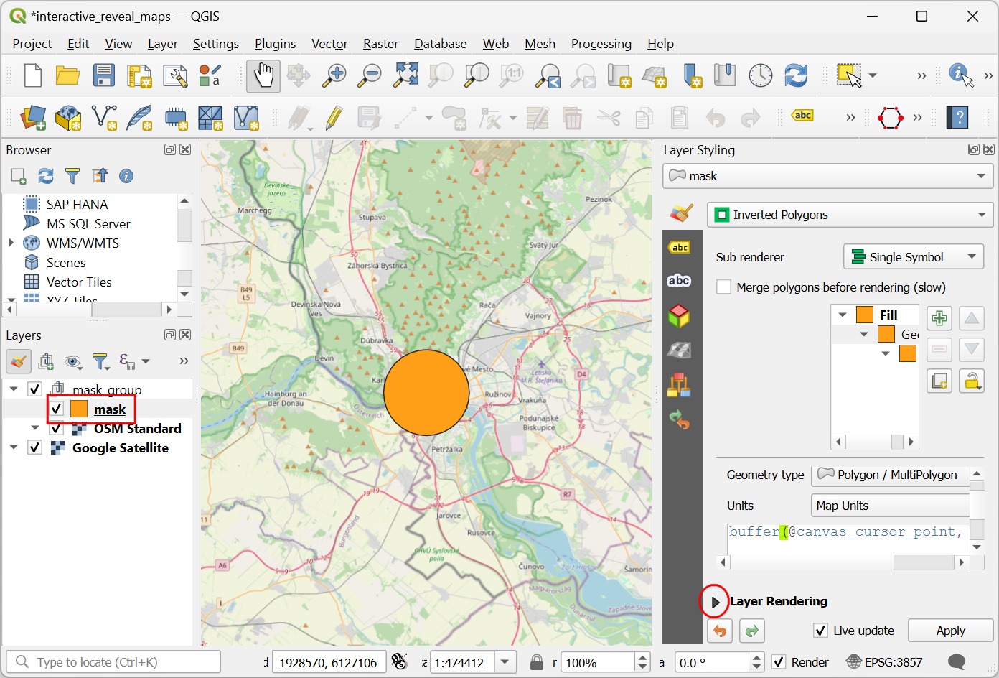
Kliknite na padajući selektor za Sloj Režim mešanja. Izaberite režim mešanja
Inverzna maska ispod. Sloj ispod grupe slojeva će sada biti otkriven u delu koji pokriva poligon bafera.
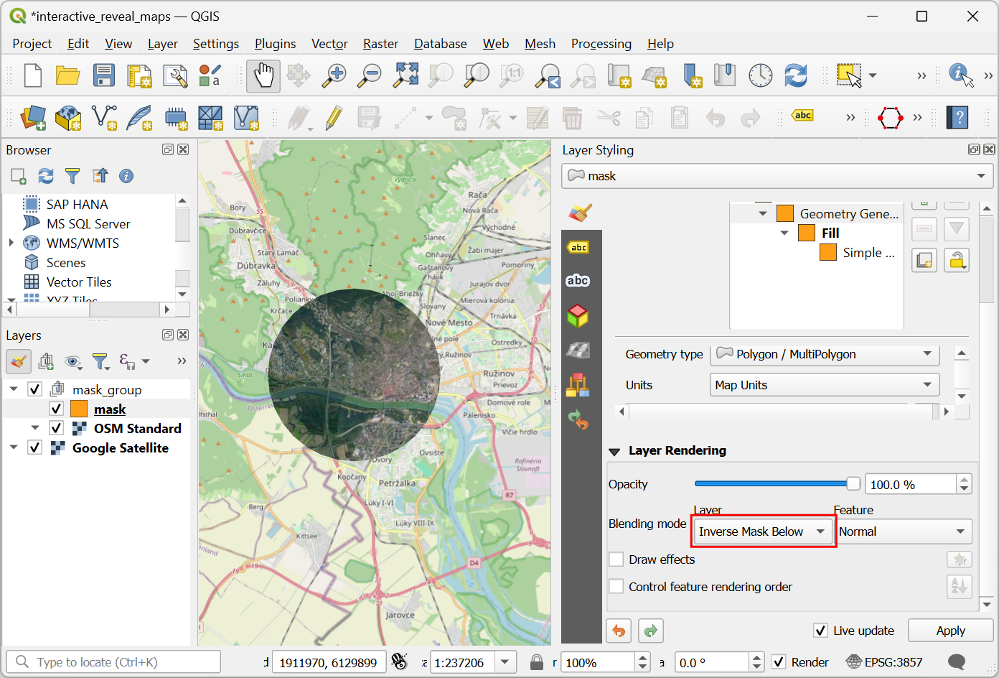
Platno mape još uvek ne reaguje na kretanje kursora jer se ne osvežava osim ako ne pomerite mapu. Hajde da podesimo automatsko osvežavanje. Kliknite desnim tasterom miša na sloj „maska“ i izaberite Svojstva.
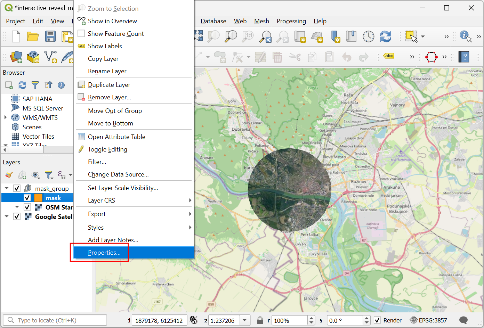
Pređite na karticu Rendering. Pomerite se nadole i označite Refresh layer at interval. Podesite interval na mali broj kao što je
0.1(tj. 100ms) i kliknite OK.
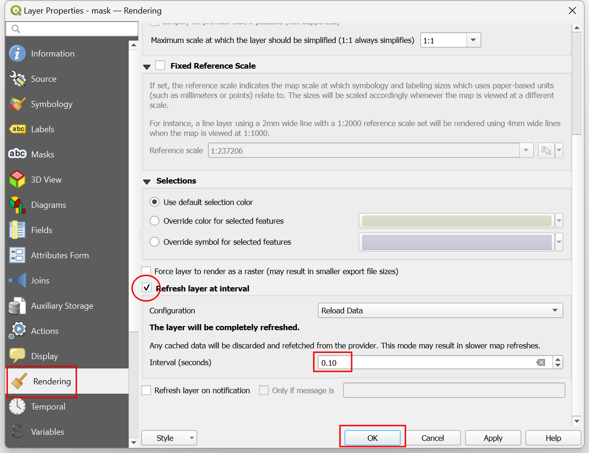
Sada, dok pomerate kursor, oblast ispod položaja kursora će biti interaktivno otkrivena.
If you want to give feedback or share your experience with this tutorial, please comment below. (requires GitHub account)